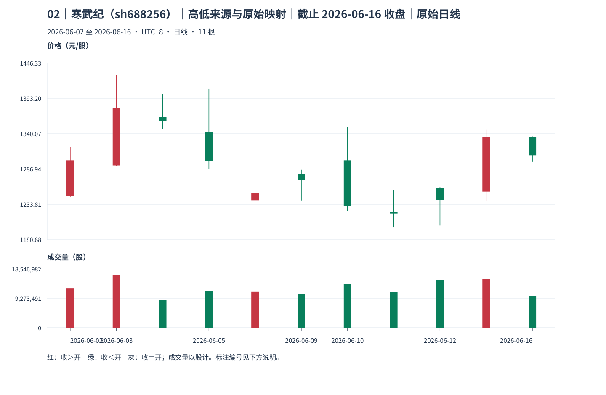
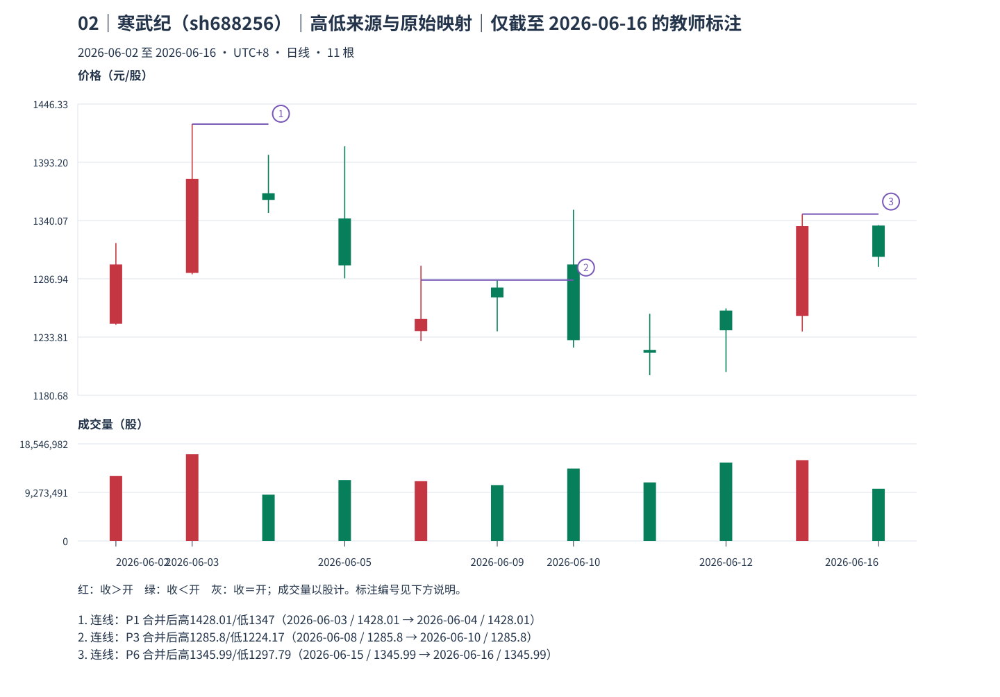
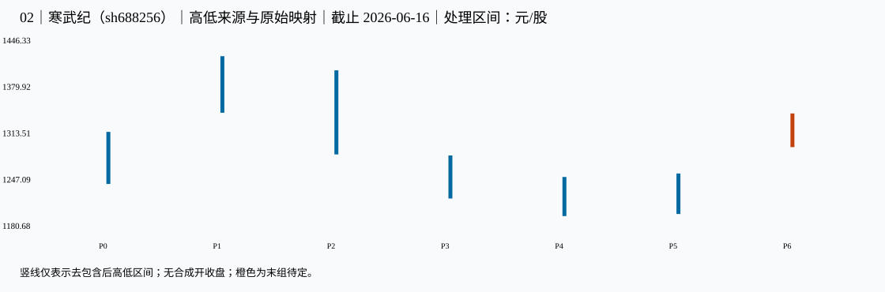

02｜寒武纪（sh688256）｜高低来源与原始映射｜本包讲解
教师讲解仅截止 2026-06-16；先保留同编号原答，逐小段核对、确认理解后再继续。
真实未复权日线；价格单位元/股（CNY/share），成交量单位股（shares），横轴按实际交易日顺序。窗口避开已知价格基准变化，其他公司行为及现金分红日历仍未穷尽核准；价格差不单独证明技术破位、经济损失或投资总回报。样本按教学需要事后选取，不用于估计模式频率。
声明起点 2026-06-02，首对 raw 0=[1245.000,1319.580]、raw 1（2026-06-03）=[1291.000,1428.010]，互不包含，高低共同向上。只按本窗口启动，未补造更早热身资料，也未绑定此前已确认段；左边界限制仍保留，首个笔端点不能自动作为真实段起点。
这一例实际算出了什么
这条处理竖线映射为 raw 4=2026-06-08[1230.080,1298.880]；raw 5=2026-06-09[1239.020,1285.800]；raw 6=2026-06-10[1224.170,1349.900]。3 根真实日 K 只形成一个 P 号，中心距只数 P。
选 P3：此前 P2[1287.34,1407.77] → P3[1230.080,1298.880]，高低共同降低，采用向下取两个较小值。
当前 [1230.08,1298.88] 与 raw 5（2026-06-09）[1239.020,1285.800] 合为 [1230.08,1285.8]；当前 [1230.08,1285.8] 与 raw 6（2026-06-10）[1224.170,1349.900] 合为 [1224.17,1285.8]。每步都与当前合成区间比较，不把包含关系当作可无限传递。
最终 P3=[1224.17,1285.8]；高点实际日 2026-06-09，低点实际日 2026-06-10；最后吸收 2026-06-10，known_at=2026-06-11。
合成高低各有真实来源，但不存在一笔真实交易同时给出这条竖线的开、收、量；原图保留每个交易日的股数成交量。
known_at 是本窗口、给定口径下边界证据齐备之日，空值表示尚待；confirmed_at_cutoff＝本截止内分型满足；provisional_right_group＝右组尚可吸收；provisional_fractal＝笔端点仍待；latest_endpoint_revisable＝末端仍可修订；accepted_at_cutoff＝本次接受。所有状态均非永久确认。
对照原图、标注和处理区间



展开本截止的逐根映射、分型、笔、拒绝与修订证据
1 原始 K 线 → 处理区间
| 原始号 | 日期 | 开 | 高 | 低 | 收 | 映射到 |
|---|---|---|---|---|---|---|
| 0 | 2026-06-02 | 1246.000 | 1319.580 | 1245.000 | 1300.000 | P0 |
| 1 | 2026-06-03 | 1292.300 | 1428.010 | 1291.000 | 1378.100 | P1 |
| 2 | 2026-06-04 | 1365.000 | 1400.000 | 1347.000 | 1358.900 | P1 |
| 3 | 2026-06-05 | 1342.000 | 1407.770 | 1287.340 | 1299.200 | P2 |
| 4 | 2026-06-08 | 1239.300 | 1298.880 | 1230.080 | 1250.360 | P3 |
| 5 | 2026-06-09 | 1279.000 | 1285.800 | 1239.020 | 1270.010 | P3 |
| 6 | 2026-06-10 | 1300.000 | 1349.900 | 1224.170 | 1231.000 | P3 |
| 7 | 2026-06-11 | 1221.960 | 1255.000 | 1199.000 | 1219.500 | P4 |
| 8 | 2026-06-12 | 1258.000 | 1260.000 | 1202.000 | 1240.000 | P5 |
| 9 | 2026-06-15 | 1253.000 | 1345.990 | 1238.880 | 1335.000 | P6 |
| 10 | 2026-06-16 | 1335.500 | 1335.910 | 1297.790 | 1306.990 | P6 |
| 处理号 | 原始号 | 日期范围 | [低,高] | 低点实际日 | 高点实际日 | 合并方向 | 形成/末次修改 | 右边界已知日 |
|---|---|---|---|---|---|---|---|---|
| P0 | [0] | 2026-06-02—2026-06-02 | [1245,1319.58] | 2026-06-02 | 2026-06-02 | 无合并 | 2026-06-02 | 2026-06-03 |
| P1 | [1, 2] | 2026-06-03—2026-06-04 | [1347,1428.01] | 2026-06-04 | 2026-06-03 | up | 2026-06-04 | 2026-06-05 |
| P2 | [3] | 2026-06-05—2026-06-05 | [1287.34,1407.77] | 2026-06-05 | 2026-06-05 | 无合并 | 2026-06-05 | 2026-06-08 |
| P3 | [4, 5, 6] | 2026-06-08—2026-06-10 | [1224.17,1285.8] | 2026-06-10 | 2026-06-09 | down | 2026-06-10 | 2026-06-11 |
| P4 | [7] | 2026-06-11—2026-06-11 | [1199,1255] | 2026-06-11 | 2026-06-11 | 无合并 | 2026-06-11 | 2026-06-12 |
| P5 | [8] | 2026-06-12—2026-06-12 | [1202,1260] | 2026-06-12 | 2026-06-12 | 无合并 | 2026-06-12 | 2026-06-15 |
| P6 | [9, 10] | 2026-06-15—2026-06-16 | [1297.79,1345.99] | 2026-06-16 | 2026-06-15 | up | 2026-06-16 | 末组仍可吸收 |
2 分型：发生与知道分列
| 顶/底 | 中心/三组 | 极值日/价 | 三组最早形成日 | 右组末次吸收 | 边界已知日 | 截止状态 |
|---|---|---|---|---|---|---|
| top | P1: [0, 1, 2] | 2026-06-03: 1428.01 | 2026-06-05 | 2026-06-05 | 2026-06-08 | confirmed_at_cutoff |
| bottom | P4: [3, 4, 5] | 2026-06-11: 1199 | 2026-06-12 | 2026-06-12 | 2026-06-15 | confirmed_at_cutoff |
3 严格笔与拒绝项
| 笔号/方向 | 起点日/价 | 终点日/价 | 处理中心间距 | 全范围 | 分型证据齐备日 | 状态 |
|---|
| 起点 | 候选终点 | 中心距 | 拒绝原因 |
|---|---|---|---|
| 2026-06-03 | 2026-06-11 | 3 | spacing |
4 同类极值更新记录
| 旧端点 | 新端点 | 修订首次观察日 | 新端点分型确认日 | 原因 |
|---|
仅本包计算证据 JSON；M11；M12。本图不产生已完成线段、中枢或收益证明。
本包核对完毕后，进入下一份原图；仍须先保存下一包自己的回答。